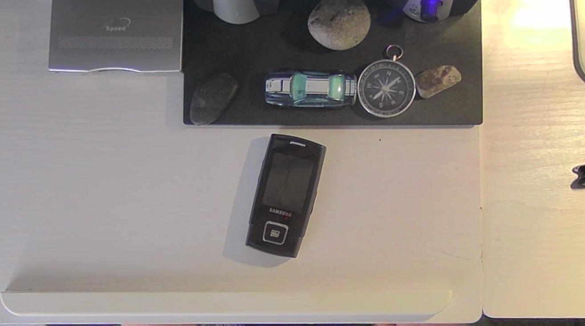

News
I Am Thinking On Starting A YouTube Channel - Entry Date: 12th June 2025
You heard me correctly. Before anyone thinks "Oh you're never gonna get popular! You'll never get monetised!" Stop. I'm thinking on doing it for fun. I don't care what the outcome is. I just want to make something that people might enjoy. Even if it's just played in the background, I don't care. Like I said, it is for fun. I don't want to get monetised. I will not be bound by YouTube's algorithm.
What I am planning on doing first is covering things from my collection. Including computers, phones and other nuggets. I may also record some cleaning and restoration videos.
I plan for the main camera to be a top down view of my desk. Similar to that of Dankpods' videos. However, That should be all similarities seen in his videos. Any other similarities are entirely accidental. For one, I intend my videos to be calm, and down-to-earth, unless for a skit.
